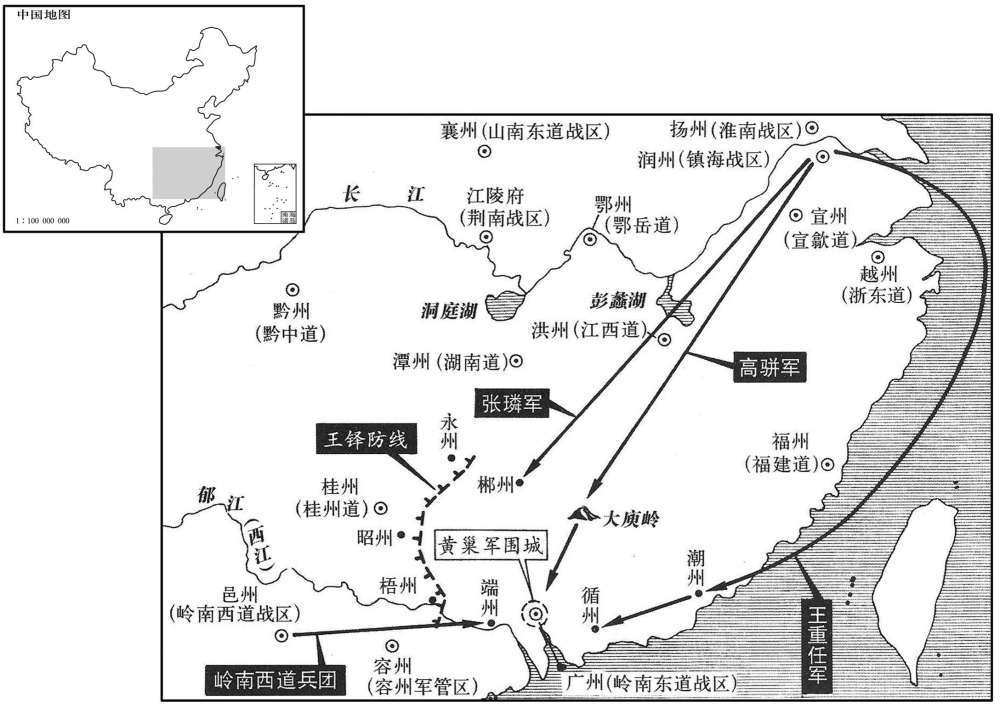
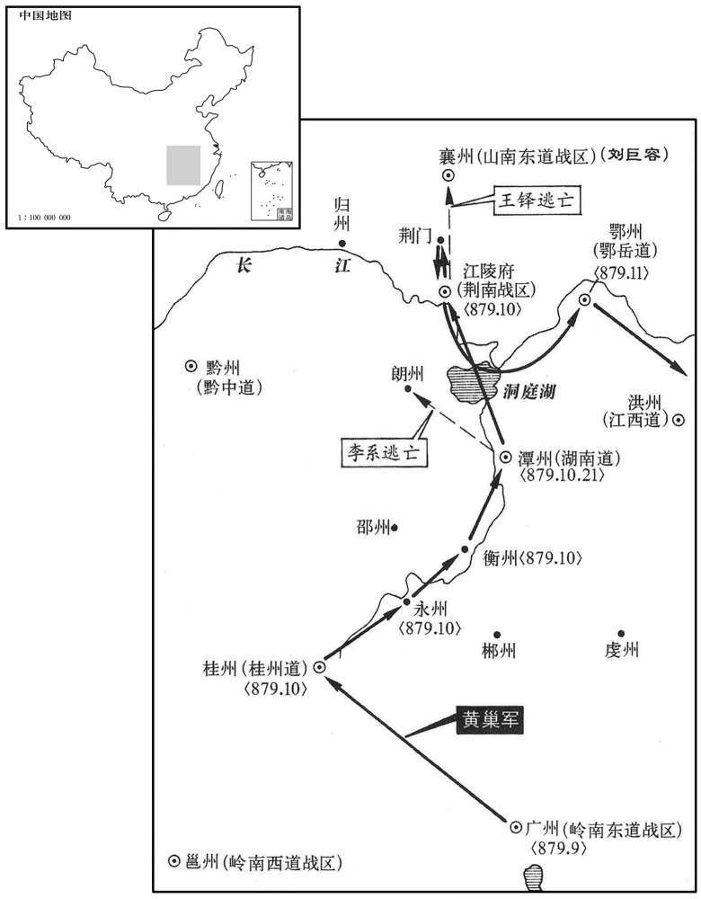

公元879年资治通鉴：本年记事、原文与白话对照
按原书编年位置阅读；追叙和史论不等于本年发生的事件。白话采用所据译本，缺译不以生成译文补齐。
卷253 · 本年记事
公元879年 · 唐僖宗惠圣恭定孝皇帝干符六年
六年〔（己亥、八七九）〕
上传原文的注释括号有异常，字符原样保留；无法可靠划分的段落默认全文显示。
本年事件索引（现代整理）
- 魏王李佾卒
- 高骈遣张璘、梁缵屡破黄巢，黄巢转赴广南
- 辛谠病重，遣徐云虔出使南诏
- 徐云虔与南诏议和，双方争论名分与贡礼
- 河东军乱杀崔季康，李侃改任河东节度使
- 崔君裕擅自接管天平军府，被曹全晸诛杀
- 发生日食
- 崔安潜悬赏捕盗，蜀中群盗互疑而散逃
- 崔安潜招募外地壮士强训蜀兵，组建黄头军与神机弩营
- 凉王李侹卒
- 王铎请自督诸将讨贼，任南面行营招讨都统
- 贺公雅部士卒再乱，河东军连番处置后始定
- 李系任行营副都统、湖南观察使
- 李侃诛贺公雅部兵致河东军再乱，斩张锴、郭咄后始定
- 黄巢求授节钺被拒，朝廷改授率府率
- 李侃称病离镇，李蔚接任河东节度使
- 高骈请分兵截击黄巢，朝廷不准
- 黄巢获率府率告身后攻陷广州，杀李迢
- 高骈改任淮南节度使并兼盐铁转运使
- 黄巢部众染瘴疫北还，攻陷潭州并焚掠江陵
- 河东节度使李蔚病卒，李卲暂领留后
- 王处存任义武节度使，康传圭接任河东
- 刘巨容与曹全晸击败黄巢，因惧朝廷失信而停止追击
- 张锴、郭昢杀康传圭并夷其家
- 王铎罢相任太子宾客、分司
- 卢携复相，改任多名关东节度使
- 陈彦谦攻陷柳州，杀刺史董岳

本年形势与背景参考图

本年形势与背景参考图
春，正月，魏王佾薨。〔佾，懿宗子。〕
春季，正月，唐懿宗之子魏王李佾去世。
镇海节度使高骈遣甚将张璘、梁缵〔考异曰：旧纪「张璘」作「张麟」，新纪、传、实录作「潾」。今从旧高骈、黄巢传及唐年补录、妖乱志、唐补纪、续宝运录。旧纪「梁绩」，今从众书。〕分道击黄巢，屡破之，降其将秦彦、毕师铎、李罕之、许勍等数十人；〔降，刀江翻。勍，渠京翻。为后秦彦、毕师铎反攻高骈张本。考异曰：郭延诲奷乱志曰：「初，黄巢将蹂践淮甸，委师铎为先锋，攻胁天长，累日不克，师铎之志沮焉。及巢北向，师铎遂降勃海。」按旧师铎传，骈败巢于浙西，皆师铎之效，故置于此。〕巢遂趣广南。〔趣，七喻翻。〕彦，徐州人；师铎，冤句人；罕之，项城人也。
唐镇海节度使高骈遣其部将张、梁缵分道围剿黄巢军，屡次将黄巢军击破。黄巢部下将领秦彦、毕师铎、李罕之、许等数十人投降高骈。黄巢于是率军向广南进军。秦彦是徐州人；毕师铎是冤句了；李罕之是项城人。
贾宏等未至南诏，相继卒于道中，〔去年五月，辛谠使贾宏使南诏。卒，子恤翻。〕从者死亦太半。〔从，才用翻。〕时辛谠已病风痹，〔痹，必至翻，脚冷湿病也。〕召摄巡官徐云虔，执其手曰：「谠已奏朝廷发使入南诏，而使者相继物故，柰何﹖〔使，疏吏翻；下同。〕吾子既仕则思徇国，能为此行乎﹖谠恨风痹不能拜耳。」因呜咽流涕。云虔曰：「士为知己死！〔古语云：士为知己者死，女为悦己者容。为，于伪翻。〕明公见辟，恨无以执德，敢不承命！」谠喜，厚具资装而遣之。〔史言辛谠垂死不忘国事。〕
贾宏等人未能到达南诏，而相继在道中去世，随从他们出使的人员也死了大半数。这时辛谠已得了风痹病，将部下摄巡官徐云虔召来，握着他的手说：“我已经向朝廷上奏请求派遣使者入南诏，但使者相继病死，怎么办？你既然入仕做官，就应该想着报效国家，是否能出使南诏？我痛恨自己患风痹不能拜你呀！”说完后即痛哭流泪。徐云虔回答说：“士为知已者死！既然明公能任用我，一直恨自己没有机会报告恩德，岂敢不尊承您的命令。”辛谠听后心里十分欢喜，给徐云虔准备丰厚的行装和钱物，作为使者出使南诏王国。
二月，丙寅，云虔至善阐城，骠信见大使抗礼，受副使已下拜。己巳，骠信使慈双羽、杨宗就馆谓云虔曰：「贵府牒欲使骠信称臣，奉贡方物；骠信已遣人自西川入唐，与唐约为兄弟，不则舅甥。〔万读曰否。〕夫兄弟舅甥，书币而已，何表贡之有﹖」云虔曰：「骠信既欲为弟、为甥，骠信景庄之子，景庄岂无兄弟，〔酋龙谥景庄皇帝。〕于骠信为诸父，骠信为君，则诸父皆称臣，况弟与甥乎！且骠信之先，由大唐之命，得合六诏为一，〔事见二百一十四卷玄宗开元二十六年。〕恩德深厚，中间小忿，罪在边鄙。〔谓南诏与西川争恨细故，以致兴戎。〕今骠信欲修旧好，〔好，呼到翻。〕岂可违祖宗之故事乎！顺祖考，孝也；事大国，义也；息战争，仁也；审名分，礼也。〔分，扶问翻。〕四者，皆令德也，可不勉乎！」骠信待云虔甚厚，云虔留善阐十七日而还。骠信以木夹二授云虔，其一上中书门下，〔上，时当翻。〕其一牒岭南西道，然犹未肯奉表称贡。
二月，丙寅（初六），徐云虔来到善阐城，南诏王国骠信见朝王朝的大使徐云虔不肯行礼，只好接受副使以下人员的跪拜。已巳（初九），骠信派慈双羽、杨宗到馆舍，对徐云虔说：“贵节度使府的牒文想使南诏骠信称臣，向唐朝奉表贡献方物；骠信已经派遣人自西川入唐廷，与唐朝皇帝约为兄弟，要不就约为舅甥。不管是兄弟还是舅甥，通书信或输钱币而已，哪有上表纳贡的道理？”徐云虔说：“骠信既然想称弟，或为甥，而骠信正是已故景庄王酋龙的儿子，景庄又岂能没有兄弟，他们是骠信的叔父辈，而现在骠信为君主，叔父辈对骠信也都要称臣，更何况弟和甥呢！况且骠信的先祖，是由大唐册立，才得以将六诏合而为一，唐朝皇帝对南诏有深恩厚德，虽然中间有些小的摩擦，但罪过都在于边境官吏。今天骠信想与唐朝重修旧好，怎么能违背祖宗的惯例呢？顺从祖先，可称为孝；服事大国，可称为义；平息战争，可称为仁；审正名分，可称为礼。这四项，都是最高的美德，难道不可勉力而行吗！”骠信于是待徐云虔以厚礼；徐云虔留居善阐城十七天才返回。南诏骠信将木二片交给徐云虔，一片是交中书门下的信，一片是给岭南西道的牒文，终于没有向唐朝廷奉表称臣纳贡。
辛未，河东军至静乐，〔静乐，汉汾阳县地，齐、周之际改曰岢岚，隋开皇十八年改曰汾源，大业四年改曰静乐，唐属岚州。九域志：在州东北五十里。〕士卒作乱，杀孔目官石裕等。壬申，崔季康逃归晋阳。甲戌，都头张错、郭咄帅行营兵攻东阳门，〔锴，器骇翻。昢，滂佩翻，又普罪翻，又普没翻。帅，读曰率。〕入府，杀季康。辛巳，以陕虢观察使高浔为昭义节度使；〔陕，失冉翻。〕以邪宁节度使李侃为河东节度使。〔考异曰：唐末见闻录：「二十日，安慰使到府，李侃充河东节度使。」实录因云「康寅除侃」，误也。〕
辛未（十一日），河东军开到静乐，士卒作乱，将孔目官石裕等人杀死。壬申（十二日），节度使崔季康逃回到晋阳。甲戌，（十四日）乱军都头张锴、郭率领行营兵进攻东阳门，进入节度使府，杀崔季康。辛巳（二十一日），朝廷任命陕虢观察使高浔为昭义节度使；任命宁节度使李侃为河东节度使。
三月，天平军节度使张裼薨，牙将崔君裕自知州事，淄州刺史曹全晸讨诛之。〔晸，知岭翻。〕
三月，天平军节度使张裼去世，牙将崔君裕自任知州，被淄州刺史曹全发兵诛讨杀死。
夏，四月，庚申朔，日有食之。
夏季，四月，庚申朔（初一），出现日食。
西川节度使崔女潜到官不诘盗，蜀人怪之。〔诘，去吉翻。〕安潜曰：「盗非所由通容则不能为。〔所由，谓捕盗官使。〕今穷核则应坐者众，〔核，下格翻。〕搜捕则徒为烦扰。」甲子，出库钱千五百缗，分置三市，〔成都城中鬻花果、蚕器于一所，号蚕市；鬻香、药于一所，号药市；鬻器用者号十宝市。〕置牓其上曰：「有能告捕一盗，赏钱五百缗。盗不能独为，必有侣，侣者告捕，释其罪，赏同平人。」未几，〔几，居岂翻。〕有捕盗而至者，盗不服，曰：「汝与我同为盗十七年，赃皆平分，汝安能捕我！我与汝同死耳。」安潜曰：「汝既知吾有牓，何不捕彼以来！则彼应死，汝受赏矣。汝既为所先，死复何辞！」〔先，悉荐翻。复，扶又翻。〕立命给捕者钱，使盗视之，然后寛盗于市，并灭其家。于是诸盗与其侣互相疑，无地容足，夜不及旦，散逃出境，境内遂无一人之盗。
西川节度使崔安潜到官上任不追究盗贼，蜀中人感奇怪。崔安潜说：“盗贼不是因为捕盗官吏的通容是无所作为的，如今要追究恐怕牵连很多人，进行大搜捕只能是徒劳烦扰。”甲子（初五），崔安潜拨出节度使府库钱一千五百缗，分别放置于成都蚕市、药市、七宝市等三市，在市上张榜，称：“有能告发并逮捕一个盗贼者，赏钱五百缗。盗贼不可能独自一个行窃，必定有同伙，若同伙告发，可以释免他的罪，和平常人一样领赏。”不久，就有人捕获盗贼来到官府的，盗贼不服，说：“你与我同伙为盗已十七年，脏物都是平分，你怎么敢逮捕我，即使到官府，你与我与一样要被处死。”崔安潜对盗贼说：“你既然知道我有榜，为何不将你的同伙逮捕送官府，如果你这样做，他就该处死，你就该受到奖赏了。现在你既然被他告发，还有什么话好说！”于是立即给捕贼的人赏钱，让盗贼看见，然后将盗贼押到市上剐死，并诛灭其一家。于是盗贼与他们的同伙互相猜疑，在成都无容身之地，不到第二天天亮，盗贼们就乘夜逃跑，西川境内没有一个盗贼。
安潜以蜀兵怯弱，奏遣大将赍牒诣陈、许募壮士，与蜀人相杂，训练用之，得三千人，分为三军，亦戴黄帽，号黄实军。又奏乞洪州弩手，教蜀人用弩走丸而射之，选得千人，号神机弩营。蜀兵由是浸强。
崔安潜以蜀中士兵懦弱胆怯，上奏朝廷请奉牒文到陈州、许州招募壮士，与蜀人混合编排，经训练后作为军队，共得三千士兵，分成三军，每人头裁黄帽，号称黄头军。又上奉朝廷乞求派来洪州弓弩手，教蜀人用弓弩射丸的技术，又选得弓弩手一千人，号称神机弩营。蜀兵于是渐渐强悍起来。
安潜以蜀兵怯弱，奏遣大将赍牒诣陈、许募壮士，与蜀人相杂，训练用之，得三千人，分为三军，亦戴黄帽，号黄头军。〔袭忠武黄头军之名也。〕又奏乞洪弩手，教蜀人用弩走丸而射之，选得千人，号神机弩营。蜀兵由是浸强。余尝谓兵之强，弱，在将不在兵。以奏之兵强天下，而汉高祖以蜀兵定三秦。自唐以来，蜀兵号为懦怯，然韦皋用以制吐蕃而有余，未尝借工于他道也。至李德裕始募工于他道以治器械，崔安潜盖仿李德裕之故智耳。诸葛孔明治蜀，作木牛、连弩之法，自晋以下，仿而为下，仿而为之。宋自女真侵噬，吴玠兄弟画境而守蜀，东南以西路兵为天下最。夫岂借工于别路哉！射，而亦翻。〕
本段缺少可靠对应白话，原文完整保留；未使用生成译文。
凉王侹薨。〔侹，懿宗子，音他顶翻。〕
本段缺少可靠对应白话，原文完整保留；未使用生成译文。
上以群盗为忧，王铎曰：「臣为宰相之长，〔长，知两翻。〕在朝不足分陛下之忧，请自督诸将讨之。」乃以铎守司徒兼侍中，充荆南节度使、南面行营招讨都统。〔考异曰：旧纪：「五年二月，铎自请督众讨贼。天子以宋威失策杀尚君长，乃以铎检校司徒兼侍中、门下侍郎、江陵尹、荆南节度使，充诸道兵马都统。」旧传：「四年，贼陷江陵，杨知温失守，未威破贼失策。朝议统帅，卢携称高骈累立战功，宜付军柄；物议未允。铎廷奏：『臣愿自率诸军荡涤群盗。』朝议然之。五年，以铎守司徒、门下侍郎、同平章事，兼江陵尹、荆南节度使，充诸道行营兵马都统。」今从实录及新纪、表。〕
唐僖宗因为群盗猖狂而十分忧虑。王铎说：“我为宰相之首，在朝廷不足以分担陛下的忧虑，请让我出朝督促诸将讨伐盗贼。”于是以王铎为试署司徒兼侍中，充当荆南节度使、南面行营招讨都统。
五月，辛卯，敕赐河东军士银。牙将贺公雅所部士卒作乱，焚掠三城，〔新书地理志：唐自高祖起兵于晋阳，自天授已来，以为北都，而晋阳宫仍隋不废。宫在都之西北，宫城周二千五百二十步，崇四丈八尺。都城左汾右晋，潜丘在中，长四千三百二十一步，广三千一百二十步，周万五千一百五十三步，其崇四丈。汾东曰东城，贞观十一年长史绩筑。两城之间有中城，武后时筑，以合东城。宫南有大明城，故宫城也。〕执孔目官王敬送马步司。节度使李侃与监军自出慰谕，为之斩敬于牙门，乃定。
五月，辛卯，（初二），唐僖宗下诏敕赐给河东军士银饷。河东牙将贺公雅部下的士卒起而作乱，焚烧并劫掠晋阳三城，并将孔目官王敬逮捕押送至马步司，河东节度使李侃与宦官监军亲自出来宣慰劝谕，在乱军逼迫下将王敬斩杀于牙门，乱事才平定。
泰宁节度使李系，晟之曾孙也，有口才而实无勇略，王铎以其家世良将，奏为行营副都统兼湖南观察使，〔官人以世而不考其才，古令之通患也。为铎、系夫守殄民张本。〕使将精五万并土团屯潭州，以塞岭北之路，拒黄巢。〔塞，悉则翻。〕
泰宁节度使李系是李晟的曾孙，能说会道，而实际上无勇无谋，王铎以为他一家世代出良将，上奏请任李系为行营副都统兼湖面南观察使，让他率领精兵五万加上土团屯于潭州，用以堵塞南岭以北的道路，以抗拒黄巢军的北进。
河东都虞候每夜捕贺公雅部卒，〔【章：十二行本「卒」下有「作乱者」三字；乙十十行本同；孔本同张校同。】〕族灭之。丁巳，余党近百人称「报冤将」，〔近，其，靳翻。〕大掠三城，焚马步都虞候张锴、府城都虞候郭咄家。节度使李侃下令，以军府不安，曲顺军情，收锴、咄，斩于牙门，并逐其家；以贺公雅为马步都虞候。锴、昢临刑，泣言于众曰：「所杀皆捕盗司密申，今曰冠死，独无烈士相救乎！」于是军士复大噪，篡取锴、昢归都虞候司。〔复，扶又翻；下巢复同。〕寻下令，复其旧职，并召还其家；收浦盗司元义宗等三十余家，诛灭之。己未，以马步都教练使朱玫等为三城斩斫使，〔玫，莫杯翻。〕将兵分捕报冠将，悉斩之，军城始定。
河东都虞候每夜秘密逮捕贺公雅所部曾参与作乱的士卒，抓到后即杀其全家族。丁巳（二十八日），乱军余党近百人自称“报冤将”，于晋阳三城大肆抢掠，焚烧马步都虞候张锴、府城都虞候郭的家。河东节度使李侃以军府不得安宁，曲意顺从乱军的愿望，竟下令将张锴、郭逮捕，于牙门斩首，并驱逐他们的家属；任命贺公雅为马步都虞候。张锴、郭监刑时，哭着对众人说：“我们只是奉命而行，所杀的人都是捕盗司所申报的名单，今日死得实在是兔枉，难道这里就没有英烈之士仗义相救吗？”军士们听后再次喧噪起来，将张锴、郭劫下刑场，送归都虞候衙门。不久李侃下令恢复二人旧职，并且召还他们的家属；将捕盗司元义宗等三十余人收捕，连同其全家一起诛杀。已示（三十日），又任命马步都教练使朱玫等为三城所斩斫使，率领士兵分头逮捕报冤将，将他们全部斩首，军城始得以安定下来。
黄巢与浙东观察使崔璆、岭南东道节度使李迢书，求天平节度使，〔璆，渠幽翻。〕二人为之奏闻；〔为，于伪翻。〕朝廷不许。巢复上表求广州节度使，〔考异曰：续宝运录曰：「黄巢先求广府兼使相，朝廷不与。黄巢夏初兵屯广南，屡候敕旨不下，遂恣行攻劫。黄巢夏六月上表，称『义军百万都统兼韶、广等州观察处置等使。』末云『六月十五日表。』秋，遣内侍仇公度赍手诏并广南、邕府、安南、安东等道节度使、指挥观察使、开国公、食邑五百户官告六通，又赐节度将吏空名尚书仆射官告五十通。九月二十日，仇公度到广州，至十月一日，巢与公度杂匹段、药物等五驮、表函并所赐官告并却府公度。表末云：『广明元年十月一日上表。』公度等其年十月二十九日至京。」如宝运录所言，则是广明元年十月一日，巢犹在广州也。按其月巢已入长安。今从旧纪。〕上命大臣议之。大仆射于琮以为：「广州市舶宝货所聚，〔舶，薄陌翻，又舟也。唐置市舶司于广州，以招来海中蕃舶。〕岂可令贼得之！」亦不许，乃议别除官。六月，宰相请除巢府〔【章：十二行本「府」上有「率」字；乙十一行本同；孔本同；张校同。】〕率，从之。〔考异曰：旧纪：「五月贼围广州，仍与广南节度使李迢、浙东观察使崔璆书求保荐，乞天平节钺。迢、璆上表论之。实录：「迢、璆上表论请，词甚恳激，乃诏公卿集议。巢又自表乞广州节度、安南都护。巢自春夏其众大疫，死者什三四，欲据有岭表，永为巢穴，乃继有是请。右仆射于琮议云元。时朝廷倚高骈成功，不允其奏，乃议除官。或云，以正员将军縻之；宰相亦沮其议，乃除率府率。」旧巢传曰：「时高骈镇淮南，表请招讨贼，许之，议加都统。巢乃渡淮，伪降于骈，骈遣将张潾帅兵受降于天长镇。巢禽潾，杀之，因虏其众。寻南陷湖、湘，遂据交、广，托崔璆奏乞天平节度，朝议不允。又乞除官，时宰臣郑畋与枢密使杨复恭欲请授同正员将军；卢携驳其议，请授率府率，如其不受，请以高骈讨之。新巢传曰：「有诏，高骈为诸道行营都统。巢进寇广州，诒李迢书，求表为天平节广使，又胁崔璆言于朝。宰相郑畋欲许之，卢携、田令孜执不可。巢又乞安南都护、广州节度使，书闻，右仆射于琮议云云。乃拜巢率府率。」旧卢携传亦皆以为携议授巢率府率。按此时携已罢相。今从实录。〕
黄巢为唐浙东观察使崔、岭南东道节度使李迢投书，请求天平节度使的职位，崔和李迢为黄巢奏闻于朝廷；朝廷不准。黄巢再向朝廷上表乞求广州节度使的职位，唐僖宗命满朝大臣对此事讨论。左仆射于琮认为：“广州有市舶司，每年蕃船往来，聚集到大量宝货，这样重要的地方岂能让盗贼控制。”于是又不批准黄巢乞任广州节度使的要求，而让大臣们议论给黄巢其他官职。六月，宰相们提出可任黄巢为率府率，唐僖宗表示同意。
河东节度使李侃以军府数有乱，〔数，所角翻。〕称疾，请寻医。敕以代州刺史康传圭为河东行军司马，征侃诣京师。秋，八月，甲子，侃发晋阳。寻以东都留守李蔚同平章事，充河东节度使。〔蔚，音郁。〕
由于军府经常发生变乱，河东节度使李侃称病请求朝廷批准他寻医治疗。唐僖宗于是下诏任命代州刺史康传圭为河东行军司马，将李侃征还京师。秋季，八月，甲子（初七），李侃自晋出发赴京。不久，唐僖宗任命东都留守李蔚以同平章事衔，充任河东节度使。
镇海节度使高骈奏：「请以权舒州刺史郎幼复充留后，守浙西，遣都知兵马使张璘将兵五千于郴州守险，兵马留后王重任将兵八千于循、潮，二州邀遮，臣将万人自大庾岭趣广州击黄巢。〔趣，七喻翻。〕巢闻臣往，必当循逃，乞敕王铎以所部兵三万于梧、桂、昭、永四州守险。」诏不许。
镇海节度使高骈向朝廷上奏：“请任命暂代舒州刺史郎幼复为镇海军留后，守浙西，调遣都知兵马使张充兵五千到郴州据守险要，兵马留后王重任统兵八千于循州、潮州阻挡黄巢军，我亲自统领一万军队翻过大瘐岭直趋广州进攻黄巢，黄巢得知我来，必定要北逃，请朝廷命令王铎以所部军队三万人于梧州、桂州、昭州、永州等四州扼守险要。”唐僖宗不予批准。
九月，黄巢得率府率告身，大怒，诟执政，急攻广州，即日陷之，执节度使李迢，转掠岭南州县。巢使迢草表述其所怀，迢曰：「予代受国恩，亲戚汉朝，腕可断，表不可草。」〔朝，直遥翻。腕，乌贯翻。〕巢杀之。〔考异曰：惊听录曰：「拥李迢在寇，复并爇海隅，又陷桂州，次攻湖南，屯衡州，方知王伐芝已山东没阵，又尚君长生送咸京，遂召李迢，怒而踬害。」新纪：「十一月，辛酉，黄巢陷江陵，杀李迢。」新传曰：「其十月，巢据荆南，胁李迢草表报天子；迢不可，巢怒，杀欴。」北梦琐言曰：「黄巢入广州，执李続，随军至荆州，令続草表述其所怀。続曰：『某骨肉满朝，世受国恩，腕即可断，表终不为领。』于江津害之。」今从实录。
本段缺少可靠对应白话，原文完整保留；未使用生成译文。
冬，十月，以镇海节度使高骈为淮南节度使，充盐铁转运使，以泾原节度使周宝为镇海节度使，〔为骈、宝鬬阋张本。〕以山南东道行军司马刘巨容为节度使。宝，平州人也。
冬季，十月，唐僖宗任命镇海节度使高骈为淮南节度使，并充任盐铁转运使，而以泾原节度使周宝为镇海节度使；又任命山南东道行军司马刘巨容为山南东道节度使。周宝是平州人。
黄巢在岭南，士卒罹瘴疫死者什三四，其徒劝之北还以图大事，巢从之。自桂州编大桒数十，乘暴水，沿湘江而下，历衡、永州，癸未，抵潭州城下。李系婴城不敢出战，巢急攻，一日，陷之，系奔朗州。〕九域志：自潭州至朗州三百八十余里。〕巢尽杀戍兵，流尸蔽江而下。尚让乘胜进逼江陵，众号五十万。时诸道兵未集，江陵兵不汉万人，王铎留其将刘汉宏守江陵，自帅众趣襄阳，〔九域志：自江陵至襄阳四百四十里。帅，读曰率。趣，七喻翻。〕云欲会刘巨容之师。铎既去，汉宏大掠江陵，〔考异曰：旧纪：「广明元年二月，巢陷潭州，王铎弃江陵，奔襄阳，汉宏大掠。」实录：「闰月，湖南奏：黄甾贼众自衡、永州下，十月二十七日攻陷潭州。新巢传曰：「广明初，贼自岭南寇湖南诸郡，攻潭州，陷之。」旧巢传：「巢欲据南海之地坐，邀明朝命。是岁，自春及夏，其众大疫，死者十三四。众劝请北归以图大利，巢不得已实明元年北踰五岭犯湖、湘、江浙。」按旧纪、传皆云广明元年败王铎。今月日从实录，事从旧书。又据旧纪、传，则刘汉宏本王铎将，铎去而汉宏留江陵大掠，遂为盗也。实录用之，而于铎奔襄阳下添「先是」字。若铎在江陵，汉宏本王铎将，铎去而汉宏留江陵大掠江陵，与黄巢事了不相干，何必言「后半月，余，贼众乃据其城」也！吴越备史云：「汉宏本兖州小吏，领本州岛兵御巢寇，遂杀将首，劫辎重而叛。后命前濠州刺中崔锴招降之。」据此，则汉宏本群盗也。新传用之，而云铎招降之。或者汉宏本群盗，中间降铎为部将，铎去江陵，汉宏复大掠为盗，其后又降于崔锴，遂为唐臣也。〕焚荡殆尽，士民，逃窜山谷。会大雪，僵尸满野。〔僵，居良翻。〕后旬余，贼乃至。汉宏兖州人也，帅其众北归为群盗。〔帅，读曰率。〕
黄巢军在岭南地区，士卒得瘴疫死者有十分之三四，黄巢的部下劝黄巢北还以图大事，黄巢表示赞同。于是自桂州编制大木筏数十个，乘洪水沿湘江顺流而下，穿过衡州、永州，癸未（二十七日），抵达潭州城下。李系紧把城门不敢出来迎战，黄巢急攻一日，将城攻陷，李系逃奔朗州。黄巢将潭州戍兵全部杀死，将尸体抛入湘江顺流而下，以致死尸把江面都遮盖住了。尚让率军乘胜进逼江陵，号称五十万。当时诸道军队尚未集结，江陵官军兵不满万人，王铎留下部将刘汉宏据守江陵，自己率众赶往襄阳，宣称将要会合刘巨容所率军队。王铎既已离去，刘汉宏趁机对江陵大肆抢劫，几乎将江陵城烧了个干净。士民逃窜于山谷，值天降大雪，大批冻死于山野，使山上一片僵尸。十多天后，黄巢的军队才赶到。刘汉宏是兖州人，这时率领其部队向北逃亡成为群盗。
闰月，丁亥朔，河东节度使李蔚有疾，以供军副使李卲权观察留后，监军李捧皋权兵马留后。己丑，蔚薨。都虞候张锴、郭昢卲，〔状，奏状。锴、昢因署状，黜李卲而进丁球。绌，丑律翻。〕以少尹丁球知观察留后。
两版字句有差异，建议核对原文。
闰十月，丁亥朔（初一），唐河东节度使李蔚患疾病，让供军副使李邵暂时任观察留后，监军李奉皋暂时任兵马留后。己丑（初三），李蔚病逝。都虞侯张锴、郭签署奏状将李邵废黜，让少尹丁球任知观察留后。
十一月，戊午，以定州已来制置使万年王处存为义武节度使，河东行军司马鴈门关已来制置使康传圭为河东节度使。〔四朝志：宣宗大中五年，以白敏中充招讨党项行营都统制置等使。制置使之名始此。宋朝初不常置，掌经画边鄙军旅之军。政和中，熙、秦用兵，以内侍童贯为之。汔南渡之后，江、淮、荆、蜀皆置制置使，其任重矣。〕
十一月，戊午（初三），朝廷任命定州已来制置使万年人王处存为义武军节度使，又任命河东行军司马、雁门关已来制置使康传圭为河东节度使。
黄巢北趣襄阳，〔趣，七喻翻。〕刘巨容与江西招讨使淄州刺史曹全晸合兵屯荆门以拒之。〔九域志：襄阳南至荆门二百七十余里。〕贼至，巨容伏兵林中，全晸以轻骑逆战，阳不胜而走，贼追之，伏发，大破贼众，乘胜逐北，比至江陵，〔比，必利翻，及也。九域志：荆门南至江陵一百六十五里。〕俘斩其什七八。巢与尚让收余众渡江东走。或劝巨容穷追，贼可尽也。巨容曰：「国家喜负人，〔喜，许记翻。〕有急抚存将士，不爱官赏，事宁则弃之，或更得罪；〔唐末之政，诚如刘巨容之言。〕不若留贼以为富贵之资。」众乃止。全晸渡江追贼，会朝廷以泰宁都将段彦谟代为招讨使，全晸亦止。由是贼势复振，〔复，扶又翻。〕攻鄂州，陷其外郭，转掠饶、信、池、宣、歙、杭十五州众至二十万。
黄巢向北进攻襄阳，唐山南东道节度使刘巨容与江西招讨使淄州刺史曹全合兵，屯于荆门以抗拒黄巢。贼军赶到，刘巨容在林中埋下伏兵，曹全率轻骑迎战，假装不胜而走，贼军追赶，伏兵齐发，大破贼军，并乘胜追逐到江陵，俘虏和斩杀贼军十分之七八。黄巢与尚让收集余众渡过长江向东转移。有人劝刘巨容穷追不舍，可将贼军杀尽，但刘巨容却有不同看法，他说：“国家常说话不算数，有危急时就抚存将士，不惜赏官予人，事情平定下来时就将我们抛弃于一边，有的人甚至因功得罪；不如将残留下来，以为我辈取富贵的资本。”部众于是不再提追击黄巢之事。曹全率军渡过长江追赶贼军，恰好朝廷任命泰宁都将段彦谟代曹全为招讨使，于是曹全也停止了追击。贼军得以逃走，势力复振，进攻鄂州，将其外城攻陷，转而挥师掠夺饶州、信州、池州、宣州、歙州、杭州等十五州之地，部众又发展到二十万人。
康传圭自代州赴晋阳，庚辰，至乌城驿；张锴、郭昢出迎，乱刀斫杀之，至府，又族其家。
康传圭自代州赶赴晋阳，庚辰（二十五日），来到乌城驿；河东都虞候张锴、郭出城来迎接，康传圭命部下用乱刀将二人砍杀。进入河东军府，又将二人家族全部诛灭。
十二月，以王铎为太子宾十各、分司。〔以江陵之败也。〕
两版字句有差异，建议核对原文。
十二月，朝廷任命王铎为太子宾客、分司东都任闲职。
初，兵部尚书卢携尝荐高骈可为都统，至是，骈将张璘等屡破黄巢，乃复以携为门下侍郎、平章事，凡关东节度使，王铎、郑畋所除者，多易置之。〔为卢携倚高骈以误国张本。〕
起初，兵部尚书卢携曾举荐高骈可担任都统，至此，高骈部将张等屡次攻破黄巢，于是唐僖宗再任卢携为门下侍郎、平章事，举凡关东诸镇的节度使，由王铎、郑畋所任命的多罢免改任。
是岁，桂阳贼陈彦谦陷柳州，杀刺史董岳。
两版字句有差异，建议核对原文。
这一年，桂阳贼帅陈彦谦攻陷郴州，将郴州刺史董岳杀死。
译本中未与胡注本可靠对应的内容
以下另列供核对版本差异，不并入胡注本正文。
译本所附古文
[8]凉王薨。
译本白话
唐懿宗子凉王李去世。
译本所附古文
[16]九月，黄巢得率府率告身，大怒，诟执政，急攻广州，即日陷之，执节度使李迢，转掠岭南州县。巢使迢草表述其所怀，迢曰：“予代受国恩，亲戚满朝，腕可断，表不可草。”巢杀之。
译本白话
九月，黄巢得到朝廷给予的率府率的的委任状，大怒，大骂当朝宰相，并率军急攻广州，当天即将广州攻陷，活捉广州节度使李迢，并挥师转掠岭南地区各州县。黄巢又让李迢草写表文向朝廷申述自己想当广州节度使的愿望，李迢回答说：“我世代蒙受国家的恩典，亲戚当官的布满朝廷，我宁愿被斩断手腕，决不为你草写表文。”黄巢将其杀死。